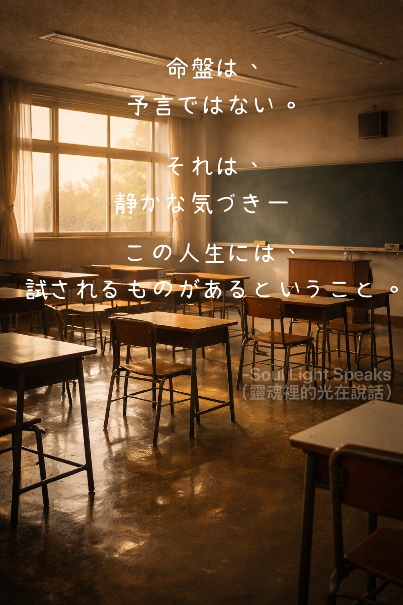
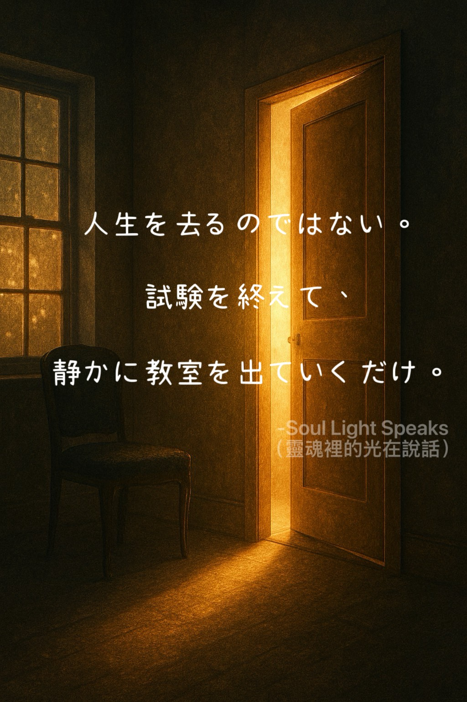

愛が足りなくても、優しさを選ぶ。恨みはなく、あるのは真心だけ。乗り越えたとき、道は開けた。
本当に大事なことが起こる前に、警告はもう出ている。でも多くの場合、気づかない。気づいても見ないふりをすることもある。

命盤は、予言ではない。それは、静かな気づき——この人生には、試されるものがあるということ。
人生は試験です。誰もが受験生、それぞれ違う答案に取り組んでいます。
人生は前にしか進めない。このページは今、書き進めている。
《九つの魂の課題学習：宇宙体験の循環》
天才は使命を抱えてやって来る。すべての魂には選択がある——自分らしく生きるか、使命に応えるか。果たされなかった使命は必ず誰かが受け継ぐ。
三万日あまりの、人生。世界は、止まることなく進み続ける。人はそれぞれ、違う道を歩み、向き合うべきものを学んでいく。優しささえあれば、それでもう十分。
かつて、大切な人を救おうとした—でも、力は及ばなかった。その無力さが後に続く人たちへの希望となった。家族からの贈り物、一生を貫く使命。

人生を去るのではない。試験を終えて、静かに教室を出ていくだけ。